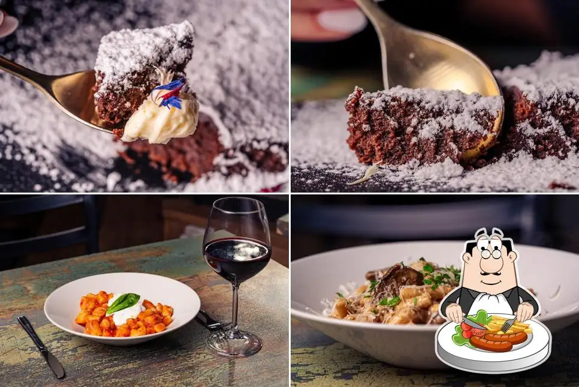
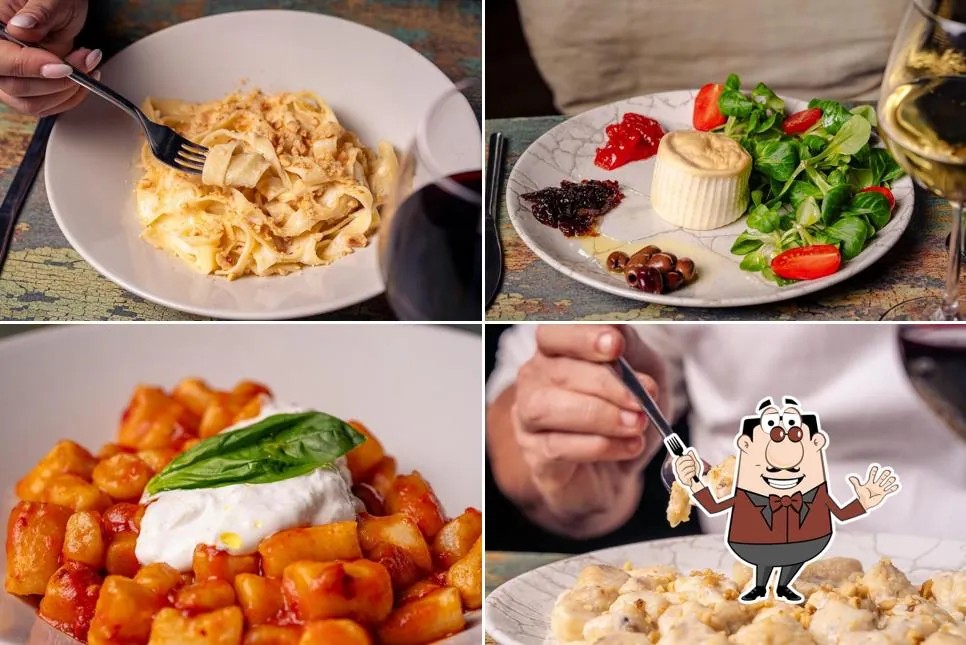
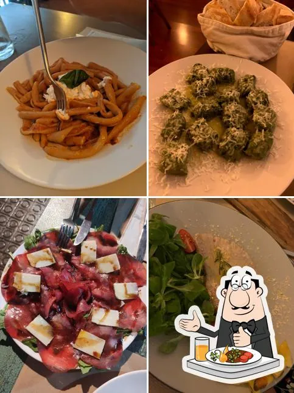
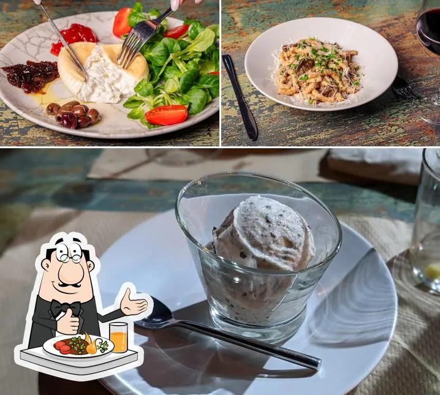

La Patsa
Lab
Hecho delante tuyo, desde cero.
No es un restaurante italiano cualquiera. Es un laboratorio donde ves nacer la pasta: la harina sobre la mesa, la masa amasada a mano, el corte, el secado. Cada plato es el resultado de un proceso que llevas viendo desde que te has sentado.

Así nace la pasta
cada mañana.
Antes de que llegues, el laboratorio ya ha empezado. Hay harina sobre la mesa, huevos frescos esperando, y el chef con las manos en la masa. Esto es lo que hace diferente a La Patsa Lab: el proceso es el espectáculo.
La harina y el huevo
Todo empieza con ingredientes de primera: harina tipo 00, huevos frescos de yema naranja. No hay atajos, no hay pasta industrial. El color amarillo intenso que ves en el plato no es colorante — es la yema. Sin trucos.
farina 00 · yemas frescas · sin aditivosEl amasado a mano
La masa se trabaja durante minutos hasta conseguir la textura exacta: elástica, sedosa, sin burbujas. Es el momento más físico del proceso. Puedes verlo desde la mesa — el chef amasa en el obrador a la vista. Nada se esconde en la cocina.
20 min de trabajo · textura al tacto · sin máquinaEl corte y el formado
Tagliatelle estirado con rodillo y cortado a mano. Gnocchi formados uno a uno. Raviolis rellenos y sellados a presión. Cada formato tiene su ritmo, su grosor exacto. La pasta verde de espinacas se mezcla en este paso, añadiendo color real sin colorante.
tagliatelle · gnocchi · ravioli · pasta verde espinacasEl secado y el plato
La pasta descansa en bandejas durante el tiempo justo. Cuando llegas, las ves colgadas o extendidas — ese detalle visual es parte de la experiencia. Después, cocción al punto, salsa que abraza la pasta (nunca al lado), y el plato llega en menos de doce minutos.
secado natural · cocción justa · salsa integradaPasta fresca de temporada.
La carta cambia según la temporada y lo que entra en la cocina. Lo que no cambia: todo sale del laboratorio ese mismo día. Nada congelado, nada de ayer.

Tagliatelle de la casa
Pasta al huevo estirada a mano. Con salsa carbonara de receta propia, crujiente de nuez tostada. El plato que repiten todos.

Gnocchi di spinaci
Ñoquis de espinacas, verdes intensos, con salsa de tomate lento y ricotta fresca encima. El verde real viene de la espinaca en la masa.

Pasta con setas y parmesano
Pasta fresca corta con setas silvestres salteadas y parmesano rallado al momento. Simple, de temporada, honesto.
Lo que ves antes de comer.
"Laboratorio de pastas y postres artesanales hechos delante tuyo."
No hace falta confiar en lo que dice la carta. Puedes verlo con tus propios ojos. Eso es lo que hace diferente a este lugar: la transparencia del proceso como parte de la experiencia.
En el corazón
del Eixample.
Carrer de Casanova 94
08011 Eixample, Barcelona
- LunesCerrado
- Martes13:00 – 16:00 · 20:00 – 23:00
- Miércoles13:00 – 16:00 · 20:00 – 23:00
- Jueves13:00 – 16:00 · 20:00 – 23:00
- Viernes13:00 – 16:00 · 20:00 – 23:30
- Sábado13:00 – 16:00 · 20:00 – 23:30
- Domingo13:00 – 16:00
Por teléfono o reservando directamente aquí. Recomendamos reservar — se llena rápido los fines de semana.
Lo que suelen preguntar.
¿Qué significa que la pasta es "artesanal"?
En La Patsa Lab, artesanal significa exactamente eso: la pasta se elabora a mano cada mañana antes del servicio. No usamos pasta industrial ni seca de paquete. Todo parte de la mezcla de harina tipo 00 y huevo fresco, se amasa, se estira y se corta el mismo día. Cuando llegas, la pasta lleva pocas horas hecha. Eso afecta directamente a la textura y al sabor: más tierna, más porosa para absorber la salsa.
¿Puedo ver cómo elaboran la pasta?
Sí, eso es precisamente la idea. El laboratorio está a la vista. El proceso de amasado, corte y formado de la pasta se hace en el espacio del restaurante, no en una cocina cerrada. Si llegas en el momento adecuado, puedes ver la pasta antes de que llegue a tu plato. Es parte del concepto: transparencia total del proceso. Muchos clientes lo consideran parte de la experiencia, no solo algo decorativo.
¿Hay opciones vegetarianas?
Sí. Varios platos de la carta son vegetarianos de origen: la pasta con setas, los gnocchi di spinaci con salsa de tomate y ricotta, o la pasta con burrata y verduras. El chef puede adaptar algunos platos según petición. Si tienes restricciones concretas (gluten, lactosa, etc.), lo mejor es llamar antes o indicarlo en la reserva para que cocina pueda prepararse con tiempo.
¿Es necesario reservar o se puede ir sin reserva?
No es obligatorio, pero sí muy recomendable, especialmente los viernes y sábados por la noche. La Patsa Lab tiene un aforo reducido y se llena rápido en los turnos de cena del fin de semana. En el turno de mediodía entre semana suele haber más disponibilidad sin reserva previa. Para grupos de más de cuatro personas, recomendamos siempre reservar con antelación para asegurar mesa y para que cocina pueda preparar bien el servicio.
¿También hacen postres artesanales?
Sí. La propuesta del laboratorio no se limita a la pasta: los postres también se elaboran en casa. La carta incluye postres de temporada, helados artesanales y tartas propias. Al igual que la pasta, se preparan con el mismo criterio: ingredientes de calidad, sin industriales, hechos en el propio local. Pregunta siempre qué hay ese día — la oferta puede variar según temporada y disponibilidad de ingredientes frescos.